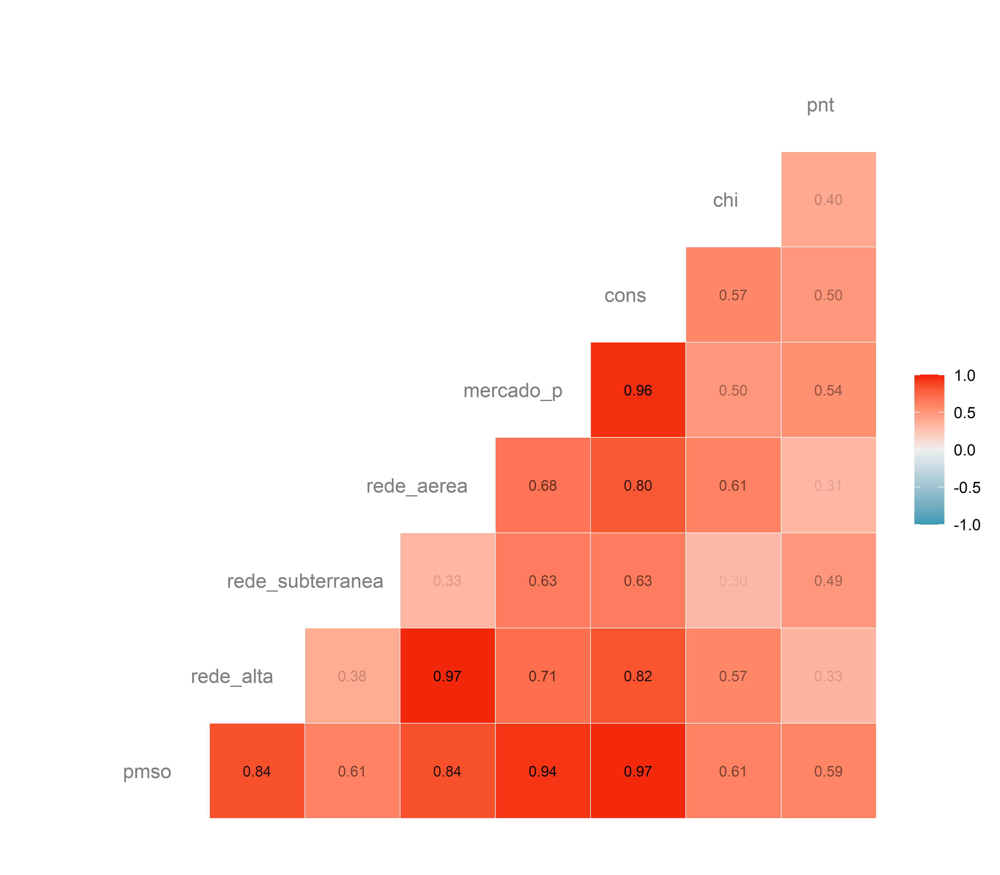
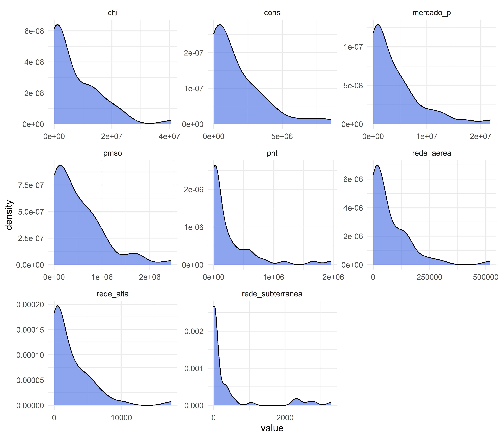
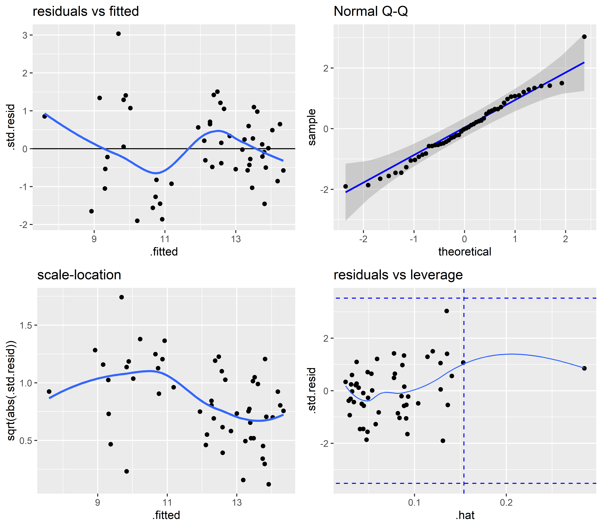
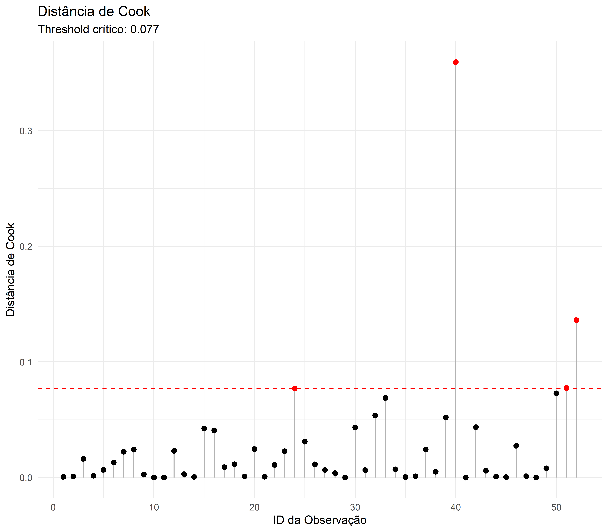
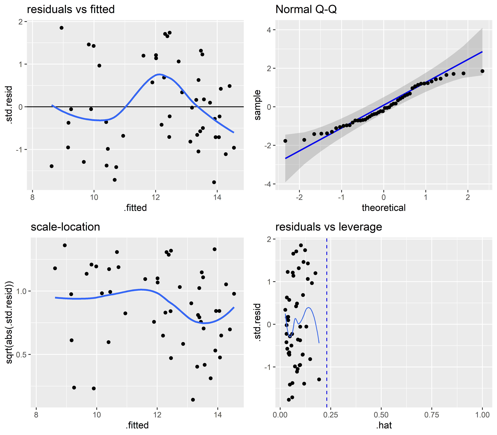
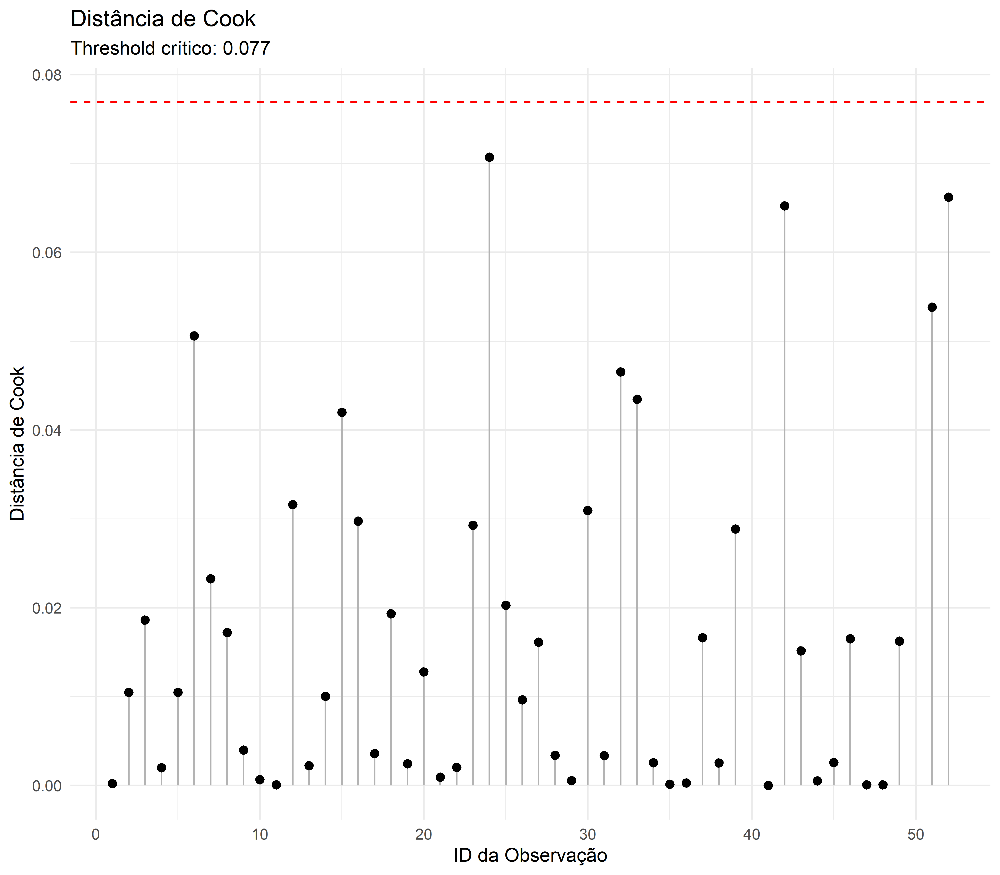

| Variável | VIF |
|---|---|
| log(cons + 1) | 88.05 |
| log(mercado_p + 1) | 86.74 |
| log(rede_aerea + 1) | 16.92 |
| log(rede_alta + 1) | 10.22 |
| log(pnt + 1) | 4.31 |
| log(chi + 1) | 3.78 |
| log(rede_subterranea + 1) | 3.05 |
Desafio 1 - Elementos de Aprendizado de Máquina
Exercício #01
Analisando os dados a partir da matriz de correlações abaixo, conclui-se que não há apenas forte associação linear entre \(Y\) e as covariáveis do dataset, mas também colinearidade entre os próprios preditores. Esse fator é importante: colinearidade excessiva infla artificialmente o \(R^2\) e mascara os efeitos reais dos estimadores.


Além disso, a distribução das variáveis numéricas intui um formato análago entre elas: uma típica assimetria à direita, ou seja, oportunidade para uma transformação \(log-log\) para estabilizar a variância e prevenir heterocedasticidade. A transformação é cabível em ambos os lados da equação, pois todos possuem a mesma assimetria, resultando em um modelo da seguinte forma:
\[\ln (Y_{i})=\beta _{0}+\beta _{k}\ln (X_{ki})+u_{i}\]
Após a análise exploratória, levantamos através do estudo da “inflação de variância (VIF)” quais preditores são mais “perigosos” ao modelo por inflar o \(R^2\) artificialmente e elaboramos dois modelos (com ou sem essas variáveis):
| Original | Log-Log | |
|---|---|---|
| (Intercept) | 1.591** | 7.597*** |
| (0.534) | (0.399) | |
| log(rede_alta + 1) | 0.024 | |
| (0.032) | ||
| log(rede_subterranea + 1) | 0.027 | 0.134* |
| (0.018) | (0.051) | |
| log(rede_aerea + 1) | 0.217*** | |
| (0.057) | ||
| log(mercado_p + 1) | 0.414** | |
| (0.141) | ||
| log(cons + 1) | 0.109 | |
| (0.135) | ||
| log(chi + 1) | 0.007 | 0.107*** |
| (0.009) | (0.028) | |
| log(pnt + 1) | 0.078*** | 0.275*** |
| (0.020) | (0.059) | |
| R² ajustado | 0.987 | 0.843 |
| P-valor (F) | 1.12e-40 | 5.91e-20 |
Tendo em vista os resultados, ambos são globalmente significativos. No entanto, optamos por seguir com o modelo mais simples que, apesar de um \(R²\) mais enxuto, exclui as variáveis que inflam essa medida artificialmente e propõe melhor significância estatística para as features individualmente. Em termos de explicabilidade, não há prejuízos, mas uma mudança de perspectiva e escala: em um modelo \(log-log\) os coeficientes expressam a elasticidade de \(Y\) dado \(X\), ou seja, estamos falando sobre o quanto \(Y\) reage percentualmente às variações percentuais nos preditores. Analisando os resíduos e a influência, obtivemos que:


Graficamente, não há evidência de quebra dos pressupostos dos modelos lineares quanto aos resíduos. Todavia, os testes formais podem dar mais detalhes:
Shapiro-Wilk normality test
W p.value
0.98 0.5249
------
Non-constant Variance Score Test
Variance formula: ~ fitted.values
Chisquare = 8.564381, Df = 1, p = 0.003428
------
Durbin-Watson Test for Autocorrelated Errors
lag Autocorrelation D-W Statistic p-value
1 0.08429418 1.764442 0.354
Alternative hypothesis: rho != 0
------
Bonferroni Outlier Test
No Studentized residuals with Bonferroni p < 0.05
Largest |rstudent|:
rstudent unadjusted p-value Bonferroni p
40 3.340994 0.0016429 0.085429| ID | Dist. Cook | Leverage (Hat) | Resíduo Std | DFB Intercepto | DFB Log(Rede) | DFB Log(Chi) | DFB Log(Pnt) |
|---|---|---|---|---|---|---|---|
| 40 | 0.359 | 0.135 | 3.035 | 1.137 | -0.047 | 0.778 | -1.090 |
| 52 | 0.136 | 0.131 | -1.902 | -0.564 | 0.135 | -0.539 | 0.587 |
| 51 | 0.077 | 0.135 | 1.406 | -0.021 | -0.086 | -0.465 | 0.331 |
| 24 | 0.077 | 0.120 | 1.505 | -0.133 | -0.476 | 0.284 | 0.098 |
| 50 | 0.073 | 0.285 | 0.855 | 0.538 | 0.193 | 0.110 | -0.447 |
A observação 50 apresentou a maior alavancagem do modelo. Ao investigar o dado original, identificou-se que esta distribuidora reportou valor zero para Perdas Não Técnicas (PNT), um comportamento atípico no cenário nacional de distribuição de energia. Para evitar que esta especificidade distorcesse as elasticidades globais, optou-se pelo isolamento deste ponto e também do 40, que explode o limite da a distância de cook, via variável dummy.
| Log-Log | Log-Log (sem influencia) | |
|---|---|---|
| (Intercept) | 7.597*** | 6.740*** |
| (0.399) | (0.454) | |
| log(rede_subterranea + 1) | 0.134* | 0.118* |
| (0.051) | (0.047) | |
| log(chi + 1) | 0.107*** | 0.079** |
| (0.028) | (0.026) | |
| log(pnt + 1) | 0.275*** | 0.390*** |
| (0.059) | (0.064) | |
| dummy_id40 | 2.715*** | |
| (0.733) | ||
| dummy_id50 | 1.398+ | |
| (0.806) | ||
| R² ajustado | 0.843 | 0.876 |
| P-valor (F) | 5.91e-20 | 1.01e-20 |
Verificando métricas de erro e influência novamente:


Shapiro-Wilk normality test
W p.value
0.9647 0.1248
------
Non-constant Variance Score Test
Variance formula: ~ fitted.values
Chisquare = 1.189406, Df = 1, p = 0.27545
------
Durbin-Watson Test for Autocorrelated Errors
lag Autocorrelation D-W Statistic p-value
1 0.1223672 1.725299 0.3
Alternative hypothesis: rho != 0
------
Bonferroni Outlier Test
No Studentized residuals with Bonferroni p < 0.05
Largest |rstudent|:
rstudent unadjusted p-value Bonferroni p
42 1.904335 0.063272 NA| Modelo | GL Res. | RSS | Df | Soma Quadr. | F | p-valor |
|---|---|---|---|---|---|---|
| log(pmso + 1) ~ log(rede_subterranea + 1) + log(chi + 1) + log(pnt + 1) | 48 | 26.8744 | NA | NA | NA | NA |
| log(pmso + 1) ~ log(rede_subterranea + 1) + log(chi + 1) + log(pnt + 1) + dummy_id40 + dummy_id50 | 46 | 20.3844 | 2 | 6.4901 | 7.3228 | 0.0017 |
Conclusão:
O modelo final apresentou diagnóstico mais robusto na comparação de modelos via ANOVA, atendendo integralmente aos pressupostos clássicos da regressão linear. Adicionalmente, a ausência de outliers significativos via teste de Bonferroni valida a estratégia de isolamento das observações atípicas por variáveis dummy.
Log(PNT) - é o maior impacto: um aumento de 1% nas Perdas Não Técnicas (fraudes) eleva o custo operacional esperado de ~0.39%. Isso faz todo o sentido, pois combater “gatos” exige equipe e fiscalização.
Log(chi) - se a interrupção de energia subir 1%, o custo sobe ~0.08%. Mostra que manter a continuidade custa dinheiro.
Log(Rede Sub.) - redes subterrâneas são mais caras de manter; um aumento de 1% na rede eleva o custo em ~0.12%.
ID 40: o coeficiente de 2.714 é gigantesco e super significativo (\(p < 0.001\)). Isso confirma que o ID 40 era uma anomalia. Sem essa dummy, esse valor estaria “sujando” todos os outros coeficientes. Ele gasta muito mais do que o tamanho dele justificaria.